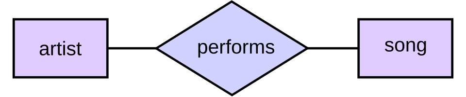
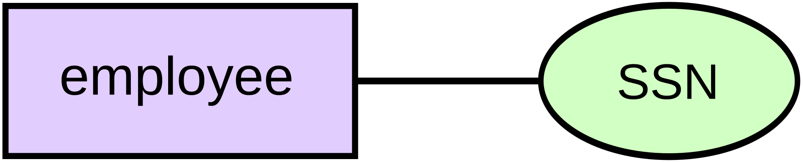
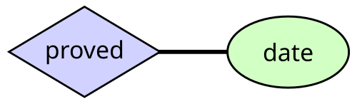
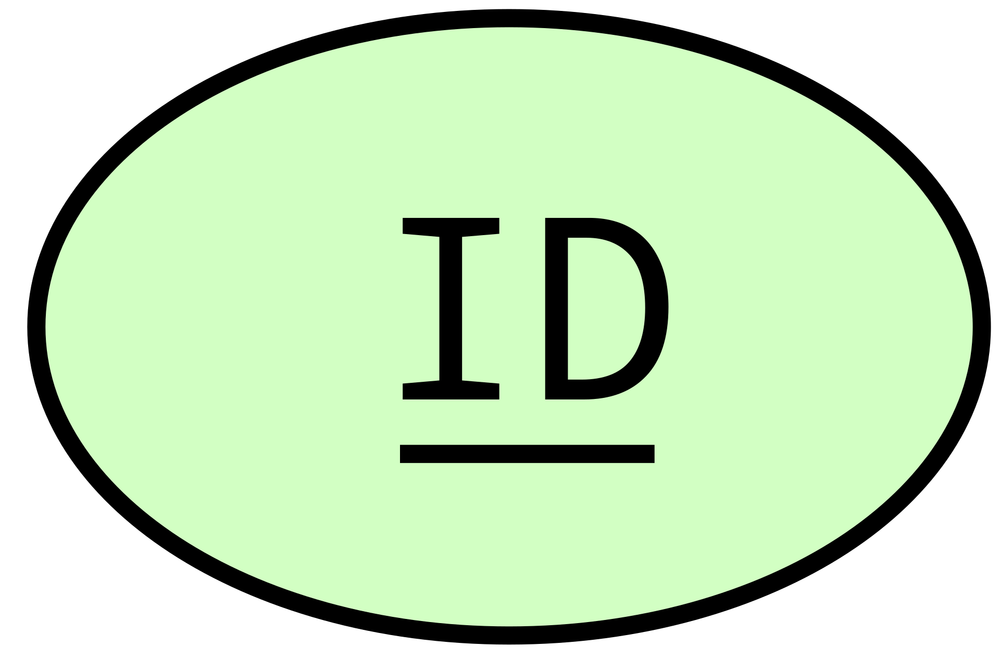

Üksuse-suhte mudel kirjeldab omavahel seotud asju, mis pakuvad huvi
konkreetses teadmiste valdkonnas. Põhiline ER-mudel koosneb üksuste
tüüpidest ja määrab kindlaks seosed, mis võivad üksuste vahel eksisteerida.
Tarkvaraarenduses moodustatakse ER-mudel tavaliselt selleks, et esindada
asju, mida ettevõte peab äriprotsesside teostamiseks meeles pidama.
Sellest tulenevalt saab ER-mudelist abstraktne andmemudel, mis määratleb
anmde- või teabestruktuuri, mida saab rakendada andmebaasis, tavaliselt
relatisoonandmebaasis.
Üksus-suhete modelleerimise töödati välja andmebaasi ja disaini jaoks.
Tänapäeval kasutatakse seda tavaliselt õpilastele andmebaasi struktuuri
aluste õpetamiseks.
Üksust (Entity) võib defineerida kui asja, mis on võimeline iseseisvalt
eksisteerima, mida saab üheselt identifitseerida ja mis on võimeline
andmeid salvestama. Üksus on abstraktsioon valdkonna keerukusest. Kui
me räägime üksusest, siis tavaliselt räägime reaalse maailma mingist
aspektist, mida saab eristada reaalse maailma teistest aspektidest.
Üksus on asi, mis eksisteerib kas füüsiliselt või loogiliselt.
Üksus võib olla füüsiline objekt, näiteks maja või auto, sündmus,
näiteks maja müük või autohooldus, või mõiste, näiteks klienditehing
või -tellimus. Üksusi võib pidada nimisõnadeks. Näideteks on arvuti,
töötaja, laul või matemaatiline teoreem.
Suhe kirjeldab, kuidas üksused on üksteisega seotud. Suhteid võib
käsitleda tegusõnadena, mis ühendavad kahte või enamat nimisõna.
Näideteks on omaniku ja arvuti vaheline suhe, töötaja ja osakonnaa
vaheline järelevalvesuhe, artisti ja laulu vaheline esinemissuhe
ning matemaatiku ja hüpoteesi vaheline tõestamissuhe.
Nii üksustel kui ka suhetel võivad olla atribuudid. Näiteks töötaja-
üksusel võib olla sostisaalkindlustusnumbri (SSN) atribuut, samas kui
tõestatud suhtel võib olla kuupäeva atribuut.
Kõigil üksustel, väljaarvatud nõrkadel ükstustel, peab olema minimaalne
unikaalselt identifitseerivate atribuutide komplekt, mida saab kasutada
unikaalse/primaarvõtmena.
Entiteetide-suhete diagrammid ei näita üksikuid Entiteede ega üksikuid seoste
eksemplare. Pigem näitavad nad entiteetide ja seoste komplekte. Näiteks konkreetne
laul on entiteet, kõigi andmebaasis olevate laulude kogum on entiteetide hulk,
lapse ja tema lõunasöögi vaheline "söödud" suhe on üks seos ja kõigi selliste lapse
ja lõunsöögi suhete hulk andmebaasis on seoste hulk.

Kaks seotud üksust

Üksus koos atribuudiga

Suhe koos atribuudiga

Primaarvõti
Kardinaalsus piirangud väljendatakse järgimselt:
Kardinaalsuse tähistamiseks kasutatakse kolme sübolit: